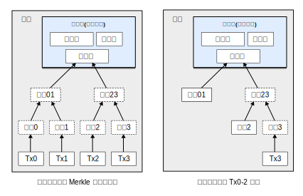

比特币：一种点对点的电子现金系统
作者：中本聪
satoshin@gmx.com
www.bitcoin.org
2008.10.31
中文翻译：李笑来
lixiaolai@gmail.com
2018.10.31
Checkout Github Repo for this translation
Abstract. A purely peer-to-peer version of electronic cash would allow online payments to be sent directly from one party to another without going through a financial institution. Digital signatures provide part of the solution, but the main benefits are lost if a trusted third party is still required to prevent double-spending. We propose a solution to the double-spending problem using a peer-to-peer network. The network timestamps transactions by hashing them into an ongoing chain of hash-based proof-of-work, forming a record that cannot be changed without redoing the proof-of-work. The longest chain not only serves as proof of the sequence of events witnessed, but proof that it came from the largest pool of CPU power. As long as a majority of CPU power is controlled by nodes that are not cooperating to attack the network, they’ll generate the longest chain and outpace attackers. The network itself requires minimal structure. Messages are broadcast on a best effort basis, and nodes can leave and rejoin the network at will, accepting the longest proof-of-work chain as proof of what happened while they were gone.
概要：一个纯粹的点对点版本的电子现金系统，将允许在线支付直接从一方发送到另一方，而无需通过金融机构。数字签名虽然提供了部分解决方案，但，若是仍然需要被信任的第三方来防止双重支出的话，那么电子支付的主要优势就被抵消了。我们提出一个方案，使用点对点网络去解决双重支出问题。点对点网络将为每笔交易标记时间戳，方法是：把交易的散列数据录入一个不断延展的、以散列为基础的工作证明链上，形成一个如非完全重做就不可能改变的记录。最长链，一方面用来证明已被见证的事件及其顺序，与此同时，也用来证明它来自于最大的 CPU 算力池。只要绝大多数 CPU 算力被良性节点控制 —— 即，它们不与那些尝试攻击网络的节点合作 —— 那么，良性节点将会生成最长链，并且在速度上超过攻击者。这个网络本身需要最小化的结构。信息将以最大努力为基本去传播，节点来去自由；但，加入之时总是需要接受最长的工作证明链作为它们未参与期间所发生之一切的证明。
1. 简介 (Introduction)
Commerce on the Internet has come to rely almost exclusively on financial institutions serving as trusted third parties to process electronic payments. While the system works well enough for most transactions, it still suffers from the inherent weaknesses of the trust based model. Completely non-reversible transactions are not really possible, since financial institutions cannot avoid mediating disputes. The cost of mediation increases transaction costs, limiting the minimum practical transaction size and cutting off the possibility for small casual transactions, and there is a broader cost in the loss of ability to make non-reversible payments for non-reversible services. With the possibility of reversal, the need for trust spreads. Merchants must be wary of their customers, hassling them for more information than they would otherwise need. A certain percentage of fraud is accepted as unavoidable. These costs and payment uncertainties can be avoided in person by using physical currency, but no mechanism exists to make payments over a communications channel without a trusted party.
互联网商业几乎完全依赖金融机构作为可信第三方去处理电子支付。虽然针对大多数交易来说，这个系统还算不错，但，它仍然被基于信任的模型所固有的缺陷所拖累。完全不可逆转的交易实际上并不可能，因为金融机构不能避免仲裁争议。仲裁成本增加了交易成本，进而限制了最小可能交易的规模，且干脆阻止了很多小额支付交易。除此之外，还有更大的成本：系统无法为那些不可逆的服务提供不可逆的支付。逆转的可能性，造成了对于信任的需求无所不在。商家必须提防着他们的顾客，麻烦顾客提供若非如此（如若信任）就并不必要的更多信息。一定比例的欺诈，被认为是不可避免的。这些成本和支付不确定性，虽然在人与人之间直接使用物理货币支付的时候是可以避免的；但，没有任何一个机制能在双方在其中一方不被信任的情况下通过沟通渠道进行支付。
What is needed is an electronic payment system based on cryptographic proof instead of trust, allowing any two willing parties to transact directly with each other without the need for a trusted third party. Transactions that are computationally impractical to reverse would protect sellers from fraud, and routine escrow mechanisms could easily be implemented to protect buyers. In this paper, we propose a solution to the double-spending problem using a peer-to-peer distributed timestamp server to generate computational proof of the chronological order of transactions. The system is secure as long as honest nodes collectively control more CPU power than any cooperating group of attacker nodes.
我们真正需要的是一种基于加密证明而非基于信任的电子支付系统，允许任意双方在不需要信任第三方的情况下直接交易。算力保障的不可逆转交易能帮助卖家不被欺诈，而保护买家的日常担保机制也很容易实现。在本论文中，我们将提出一种针对双重支出的解决方案，使用点对点的、分布式的时间戳服务器去生成基于算力的证明，按照时间顺序记录每条交易。此系统是安全的，只要诚实节点总体上相对于相互合作的攻击者掌握更多的 CPU 算力。
2. 交易 (Transactions)
We define an electronic coin as a chain of digital signatures. Each owner transfers the coin to the next by digitally signing a hash of the previous transaction and the public key of the next owner and adding these to the end of the coin. A payee can verify the signatures to verify the chain of ownership.
我们将一枚电子硬币定义为一个数字签名链。一位所有者将一枚硬币交给另一个人的时候，要通过在这个数字签名链的末尾附加上以下数字签名：上一笔交易的哈希（hash，音译，亦翻译为“散列值”），以及新所有者的公钥。收款人可以通过验证签名去验证数字签名链的所属权。

The problem of course is the payee can’t verify that one of the owners did not double-spend the coin. A common solution is to introduce a trusted central authority, or mint, that checks every transaction for double spending. After each transaction, the coin must be returned to the mint to issue a new coin, and only coins issued directly from the mint are trusted not to be double-spent. The problem with this solution is that the fate of the entire money system depends on the company running the mint, with every transaction having to go through them, just like a bank.
这个路径的问题在于收款人无法验证曾经的所有者之中没有人双重支付过。常见的解决方案是引入一个可信的中心化权威方，或称“铸币厂”，让它去检查每一笔交易是否存在双重支付。每一次发生交易之后，硬币必须返回到铸币厂，铸币厂再发行一枚新的硬币。进而，只有铸币厂直接发行的硬币才是可信的、未被双重支付过的。这个解决方案的问题在于，整个货币系统的命运被拴在运营铸币厂的那个公司（就好像银行那样）身上，每一笔交易必须通过它。
We need a way for the payee to know that the previous owners did not sign any earlier transactions. For our purposes, the earliest transaction is the one that counts, so we don’t care about later attempts to double-spend. The only way to confirm the absence of a transaction is to be aware of all transactions. In the mint based model, the mint was aware of all transactions and decided which arrived first. To accomplish this without a trusted party, transactions must be publicly announced[^1], and we need a system for participants to agree on a single history of the order in which they were received. The payee needs proof that at the time of each transaction, the majority of nodes agreed it was the first received.
我们需要一种方式，可以让收款人确认之前的所有者并没有在任何之前的交易上签名。就我们的目的而言，只有最早的交易是算数的，所以，我们并不关心其后的双重支付企图。确认一笔交易不存在的唯一方法是获悉所有的交易。在铸币厂模型之中，铸币厂已然知悉所有的交易，并且能够确认这些交易的顺序。为了能在没有“被信任的一方”参与的情况下完成以上任务，交易记录必须被公开宣布[^1]，进而我们需要一个系统能让参与者们认同它们所接收到的同一个唯一的交易历史。收款人需要证明在每笔交易发生之时，大多数节点能够认同它是第一个被接收的。
3. 时间戳服务器 (Timestamp Server)
The solution we propose begins with a timestamp server. A timestamp server works by taking a hash of a block of items to be timestamped and widely publishing the hash, such as in a newspaper or Usenet post[^2] [^3] [^4] [^5]. The timestamp proves that the data must have existed at the time, obviously, in order to get into the hash. Each timestamp includes the previous timestamp in its hash, forming a chain, with each additional timestamp reinforcing the ones before it.
本解决方案起步于一种时间戳服务器。时间戳服务器是这样工作的：为一组（block）记录（items）的哈希打上时间戳，而后把哈希广播出去，就好像一份报纸所做的那样，或者像是在新闻组（Usenet）里的一个帖子那样[^2] [^3] [^4] [^5]。显然，时间戳能够证明那数据在那个时间点之前已然存在，否则那哈希也就无法生成。每个时间戳在其哈希中包含着之前的时间戳，因此构成了一个链；每一个新的时间戳被添加到之前的时间戳之后。

4. 工作证明 (Proof-of-Work)
To implement a distributed timestamp server on a peer-to-peer basis, we will need to use a proof-of-work system similar to Adam Back’s Hashcash[^6], rather than newspaper or Usenet posts. The proof-of-work involves scanning for a value that when hashed, such as with SHA-256, the hash begins with a number of zero bits. The average work required is exponential in the number of zero bits required and can be verified by executing a single hash.
为了实现一个基于点对点的分布式时间戳服务器，我们需要使用类似亚当·伯克的哈希现金[^6]那样的一个工作证明系统，而不是报纸或者新闻组帖子那样的东西。所谓的工作证明，就是去寻找一个数值；这个数值要满足以下条件：为它提取散列数值之后 —— 例如使用 SHA-256 计算散列数值 —— 这个散列数值必须以一定数量的 0 开头。每增加一个 0 的要求，将使得工作量指数级增加，并且，这个工作量的验证却只需通过计算一个哈希。
For our timestamp network, we implement the proof-of-work by incrementing a nonce in the block until a value is found that gives the block’s hash the required zero bits. Once the CPU effort has been expended to make it satisfy the proof-of-work, the block cannot be changed without redoing the work. As later blocks are chained after it, the work to change the block would include redoing all the blocks after it.
在我们的时间戳网络中，我们是这样实现工作证明的：不断在区块之中增加一个随机数（Nonce），直到一个满足条件的数值被找到；这个条件就是，这个区块的哈希以指定数量的 0 开头。一旦 CPU 的耗费算力所获的的结果满足工作证明，那么这个区块将不再能被更改，除非重新完成之前的所有工作量。随着新的区块不断被添加进来，改变当前区块即意味着说要重新完成所有其后区块的工作。

The proof-of-work also solves the problem of determining representation in majority decision making. If the majority were based on one-IP-address-one-vote, it could be subverted by anyone able to allocate many IPs. Proof-of-work is essentially one-CPU-one-vote. The majority decision is represented by the longest chain, which has the greatest proof-of-work effort invested in it. If a majority of CPU power is controlled by honest nodes, the honest chain will grow the fastest and outpace any competing chains. To modify a past block, an attacker would have to redo the proof-of-work of the block and all blocks after it and then catch up with and surpass the work of the honest nodes. We will show later that the probability of a slower attacker catching up diminishes exponentially as subsequent blocks are added.
工作证明同时解决了如何决定谁能代表大多数做决定的问题。如果所谓的“大多数”是基于“一个IP地址一票”的方式决定的话，那么任何一个可以搞定很多 IP 地址的人就可以被认为是“大多数”。工作证明本质上来看，是“一个CPU一票”。所谓的“大多数决定”是由最长链所代表的，因为被投入最多工作的链就是它。如果大多数 CPU 算力被诚实的节点所控制，那么诚实链成长最为迅速，其速度会远超其他竞争链。为了更改一个已经产生的区块，攻击者将不得不重新完成那个区块以及所有其后区块的的工作证明，而后还要追上并超过诚实节点的工作。后文展示为什么一个被拖延了的攻击者能够追上的可能性将随着区块的不断增加而指数级降低。
To compensate for increasing hardware speed and varying interest in running nodes over time, the proof-of-work difficulty is determined by a moving average targeting an average number of blocks per hour. If they’re generated too fast, the difficulty increases.
为了应对硬件算力综合的不断增加，以及随着时间推进可能产生的节点参与数量变化，工作证明难度由此决定：基于平均每小时产生的区块数量的一个移动平均值。如果区块生成得过快，那么难度将会增加。
5. 网络 (Network)
The steps to run the network are as follows:
- New transactions are broadcast to all nodes.
- Each node collects new transactions into a block.
- Each node works on finding a difficult proof-of-work for its block.
- When a node finds a proof-of-work, it broadcasts the block to all nodes.
- Nodes accept the block only if all transactions in it are valid and not already spent.
- Nodes express their acceptance of the block by working on creating the next block in the chain, using the hash of the accepted block as the previous hash.
运行网络的步骤如下：
- 所有新的交易向所有节点广播；
- 每个节点将新交易打包到一个区块；
- 每个节点开始为此区块找一个具备难度的工作证明；
- 当某个区块找到其工作证明，它就要将此区块广播给所有节点；
- 众多其他节点当且只当以下条件满足才会接受这个区块：其中所有的交易都是有效的，且未被双重支付；
- 众多节点向网络表示自己接受这个区块的方法是，在创建下一个区块的时候，把被接受区块的哈希当作新区块之前的哈希。
Nodes always consider the longest chain to be the correct one and will keep working on extending it. If two nodes broadcast different versions of the next block simultaneously, some nodes may receive one or the other first. In that case, they work on the first one they received, but save the other branch in case it becomes longer. The tie will be broken when the next proof-of-work is found and one branch becomes longer; the nodes that were working on the other branch will then switch to the longer one.
节点始终认为最长链是正确的那个，且会不断向其添加新数据。若是有两个节点同时向网络广播了两个不同版本的“下一个区块”，有些节点会先接收到其中一个，而另外一些节点会先接收到另外一个。这种情况下，节点将在它们先接收到的那个区块上继续工作，但也会把另外一个分支保存下来，以防后者成为最长链。当下一个工作证明被找到，而其中的一个分支成为更长的链之后，这个暂时的分歧会被打消，在另外一个分支上工作的节点们会切换到更长的链上。
New transaction broadcasts do not necessarily need to reach all nodes. As long as they reach many nodes, they will get into a block before long. Block broadcasts are also tolerant of dropped messages. If a node does not receive a block, it will request it when it receives the next block and realizes it missed one.
新的交易不见得一定要广播到达所有的节点。只要到达足够多的节点，那么没多久这些交易就会被打包进一个区块。区块广播也容许一些消息被丢弃。如果一个节点并未接收到某个区块，那么这个节点会在它接收到下一个区块的时候意识到自己错失了之前的区块，因此会发出补充那个遗失区块的请求。
6. 奖励 (Incentive)
By convention, the first transaction in a block is a special transaction that starts a new coin owned by the creator of the block. This adds an incentive for nodes to support the network, and provides a way to initially distribute coins into circulation, since there is no central authority to issue them. The steady addition of a constant of amount of new coins is analogous to gold miners expending resources to add gold to circulation. In our case, it is CPU time and electricity that is expended.
按照约定，每个区块的第一笔交易是一个特殊的交易，它会生成一枚新的硬币，所属权是这个区块的生成者。这么做，使得节点支持网络有所奖励，也提供了一种将硬币发行到流通之中的方式 —— 在这个系统中，反正也没有一个中心化的权威方去发行那些硬币。如此这般稳定地增加一定数量的新硬币进入流通，就好像是黄金开采者不断耗用他们的资源往流通之中增加黄金一样。在我们的系统中，被耗用的资源是 CPU 工作时间和它们所用的电力。
The incentive can also be funded with transaction fees. If the output value of a transaction is less than its input value, the difference is a transaction fee that is added to the incentive value of the block containing the transaction. Once a predetermined number of coins have entered circulation, the incentive can transition entirely to transaction fees and be completely inflation free.
奖励还可以来自交易费用。如果一笔交易的输出值小于它的输入值，那么其中的差额就是交易费；而该交易费就是用来奖励节点把该交易打包进此区块的。一旦既定数量的硬币已经进入流通，那么奖励将全面交由交易手续费来完成，且绝对不会有通货膨胀。
The incentive may help encourage nodes to stay honest. If a greedy attacker is able to assemble more CPU power than all the honest nodes, he would have to choose between using it to defraud people by stealing back his payments, or using it to generate new coins. He ought to find it more profitable to play by the rules, such rules that favour him with more new coins than everyone else combined, than to undermine the system and the validity of his own wealth.
奖励机制也可能会鼓励节点保持诚实。如果一个贪婪的攻击者能够网罗比所有诚实节点都更多的 CPU 算力，他必须做出一个选择：是用这些算力通过把自己花出去的钱偷回来去欺骗别人呢？还是用这些算力去生成新的硬币？他应该能够发现按照规则行事是更划算的，当前规则使得他能够获得比所有其他人加起来都更多的硬币，这显然比暗中摧毁系统并使自己的财富化为虚无更划算。
7. 回收硬盘空间 (Reclaiming Disk Space)
Once the latest transaction in a coin is buried under enough blocks, the spent transactions before it can be discarded to save disk space. To facilitate this without breaking the block’s hash, transactions are hashed in a Merkle Tree[^2][^5][^7], with only the root included in the block’s hash. Old blocks can then be compacted by stubbing off branches of the tree. The interior hashes do not need to be stored.
如果一枚硬币最近发生的交易发生在足够多的区块之前，那么，这笔交易之前该硬币的花销交易记录可以被丢弃 —— 目的是为了节省磁盘空间。为了在不破坏该区块的哈希的前提下实现此功能，交易记录的哈希将被纳入一个 Merkle 树[^2][^5][^7]之中，而只有树根被纳入该区块的哈希之中。通过砍掉树枝方法，老区块即可被压缩。内部的哈希并不需要被保存。

A block header with no transactions would be about 80 bytes. If we suppose blocks are generated every 10 minutes, 80 bytes * 6 * 24 * 365 = 4.2MB per year. With computer systems typically selling with 2GB of RAM as of 2008, and Moore’s Law predicting current growth of 1.2GB per year, storage should not be a problem even if the block headers must be kept in memory.
一个没有任何交易记录的区块头大约是 80 个字节。假设每十分钟产生一个区块，80 字节乘以 6 乘以 24 乘以 365，等于每年 4.2M。截止 2008 年，大多数在售的计算机配有 2GB 内存，而按照摩尔定律的预测，每年会增加 1.2 GB，即便是区块头必须存储在内存之中也不会是什么问题。
8. 简化版支付确认 (Simplified Payment Verification)
It is possible to verify payments without running a full network node. A user only needs to keep a copy of the block headers of the longest proof-of-work chain, which he can get by querying network nodes until he’s convinced he has the longest chain, and obtain the Merkle branch linking the transaction to the block it’s timestamped in. He can’t check the transaction for himself, but by linking it to a place in the chain, he can see that a network node has accepted it, and blocks added after it further confirm the network has accepted it.
即便不用运行一个完整网络节点也有可能确认支付。用户只需要有一份拥有工作证明的最长链的区块头拷贝 —— 他可以通过查询在线节点确认自己拥有的确实来自最长链 —— 而后获取 Merkle 树的树枝节点，进而连接到这个区块被打上时间戳时的交易。用户并不能自己检查交易，但，通过连接到链上的某个地方，他可以看到某个网络节点已经接受了这个交易，而此后加进来的区块进一步确认了网络已经接受了此笔交易。

As such, the verification is reliable as long as honest nodes control the network, but is more vulnerable if the network is overpowered by an attacker. While network nodes can verify transactions for themselves, the simplified method can be fooled by an attacker’s fabricated transactions for as long as the attacker can continue to overpower the network. One strategy to protect against this would be to accept alerts from network nodes when they detect an invalid block, prompting the user’s software to download the full block and alerted transactions to confirm the inconsistency. Businesses that receive frequent payments will probably still want to run their own nodes for more independent security and quicker verification.
只要诚实节点依然在掌控网络，如此这般，验证即为可靠的。然而，如果网络被攻击者所控制的时候，验证就没那么可靠了。尽管网络节点可以自己验证交易记录，但是，只要攻击者能够继续控制网络的话，那么简化版验证方式可能会被攻击者伪造的交易记录所欺骗。应对策略之一是，客户端软件要接受来自网络节点的警告。当网络节点发现无效区块的时候，即发出警报，在用户的软件上弹出通知，告知用户下载完整区块，警告用户确认交易一致性。那些有高频收付发生的商家应该仍然希望运行属于自己的完整节点，以此保证更独立的安全性和更快的交易确认。
9. 价值的组合与分割 (Combining and Splitting Value)
Although it would be possible to handle coins individually, it would be unwieldy to make a separate transaction for every cent in a transfer. To allow value to be split and combined, transactions contain multiple inputs and outputs. Normally there will be either a single input from a larger previous transaction or multiple inputs combining smaller amounts, and at most two outputs: one for the payment, and one returning the change, if any, back to the sender.
尽管逐个地处理硬币是可能的，但为每分钱设置一个单独的记录是很笨拙的。为了允许价值的分割与合并，交易记录包含多个输入和输出。一般情况下，要么是一个单独的来自于一个相对大的之前的交易的输入，要么是很多个输入来自于更小金额的组合；与此同时，最多有两个输出：一个是支付（指向收款方），如果必要的话，另外一个是找零（指向发款方）。

It should be noted that fan-out, where a transaction depends on several transactions, and those transactions depend on many more, is not a problem here. There is never the need to extract a complete standalone copy of a transaction’s history.
值得注意的是，“扇出”在这里并不是问题 —— 所谓“扇出”，就是指一笔交易依赖于数笔交易，且这些交易又依赖于更多笔交易。从来就没有必要去提取任何一笔交易的完整独立的历史拷贝。
10. 隐私 (Privacy)
The traditional banking model achieves a level of privacy by limiting access to information to the parties involved and the trusted third party. The necessity to announce all transactions publicly precludes this method, but privacy can still be maintained by breaking the flow of information in another place: by keeping public keys anonymous. The public can see that someone is sending an amount to someone else, but without information linking the transaction to anyone. This is similar to the level of information released by stock exchanges, where the time and size of individual trades, the “tape”, is made public, but without telling who the parties were.
传统的银行模型通过限制他人获取交易者和可信第三方的信息而达成一定程度的隐私保护。出于对将所有交易记录公开的需求否决了这种方法。但是，维持隐私可通过于另一处的切断信息流来实现——公钥匿名。公众可以看到某某向某某转账了一定的金额，但是，没有任何信息指向某个确定的人。这种水平的信息发布有点像股市交易，只有时间和各个交易的金额被公布，但是，没有人知道交易双方都是谁。

As an additional firewall, a new key pair should be used for each transaction to keep them from being linked to a common owner. Some linking is still unavoidable with multi-input transactions, which necessarily reveal that their inputs were owned by the same owner. The risk is that if the owner of a key is revealed, linking could reveal other transactions that belonged to the same owner.
还有另外一层防火墙。交易者应该针对每一笔交易启用一对新的公私钥，以便他人无法将这些交易追溯到同一个所有者身上。有些多输入的交易依然难免被追溯，因为那些输入必然会被识别出来自于同一个所有者。危险在于，如果一个公钥的所有者被曝光之后，与之相关的所有其他交易都会被曝光。
11. 计算 (Calculations)
We consider the scenario of an attacker trying to generate an alternate chain faster than the honest chain. Even if this is accomplished, it does not throw the system open to arbitrary changes, such as creating value out of thin air or taking money that never belonged to the attacker. Nodes are not going to accept an invalid transaction as payment, and honest nodes will never accept a block containing them. An attacker can only try to change one of his own transactions to take back money he recently spent.
假设一个场景，某个攻击者正在试图生成一个比诚实链更快的替代链。就算他成功了，也不能对系统做任意的修改，即，他不可能凭空制造出价值，也无法获取从未属于他的钱。网络节点不会把一笔无效交易当作支付，而诚实节点也永远不会接受一个包含这种支付的区块。攻击者最多只能修改属于他自己的交易，进而试图取回他已经花出去的钱。
The race between the honest chain and an attacker chain can be characterized as a Binomial Random Walk. The success event is the honest chain being extended by one block, increasing its lead by +1, and the failure event is the attacker’s chain being extended by one block, reducing the gap by -1.
诚实链和攻击者之间的竞争可以用二项式随机漫步来描述。成功事件是诚实链刚刚被添加了一个新的区块，使得它的优势增加了 $1$；而失败事件是攻击者的链刚刚被增加了一个新的区块，使得诚实链的优势减少了 $1$。
The probability of an attacker catching up from a given deficit is analogous to a Gambler’s Ruin problem. Suppose a gambler with unlimited credit starts at a deficit and plays potentially an infinite number of trials to try to reach breakeven. We can calculate the probability he ever reaches breakeven, or that an attacker ever catches up with the honest chain, as follows[^8]:
攻击者能够从落后局面追平的概率类似于赌徒破产问题。假设，一个拿着无限筹码的赌徒，从亏空开始，允许他赌无限次，目标是填补上已有的亏空。我们能算出他最终能填补亏空的概率，也就是攻击者能够赶上诚实链的概率[^8]，如下：
$$
\begin{eqnarray*}
\large p &=& \text{ 诚实节点找到下一个区块的概率}\
\large q &=& \text{ 攻击者找到下一个区块的概率}\
\large q_z &=& \text{ 攻击者落后 $z$ 个区块却依然能够赶上的概率}
\end{eqnarray*}
$$
$$
\large q_z = \begin{Bmatrix}
1 & \textit{if}; p \leq q\
(q/p)^z & \textit{if}; p > q
\end{Bmatrix}
$$
Given our assumption that $p \gt q$, the probability drops exponentially as the number of blocks the attacker has to catch up with increases. With the odds against him, if he doesn’t make a lucky lunge forward early on, his chances become vanishingly small as he falls further behind.
既然我们已经假定 $p > q$, 既然攻击者需要赶超的区块数量越来越多，那么其成功概率就会指数级下降。于赢面不利时，如果攻击者没有在起初就能幸运地向前猛跨一步，那么他的胜率将在他进一步落后的同时消弭殆尽。
We now consider how long the recipient of a new transaction needs to wait before being sufficiently certain the sender can’t change the transaction. We assume the sender is an attacker who wants to make the recipient believe he paid him for a while, then switch it to pay back to himself after some time has passed. The receiver will be alerted when that happens, but the sender hopes it will be too late.
现在考虑一下一笔新交易的收款人需要等多久才能充分确定发款人不能更改这笔交易。我们假定发款人是个攻击者，妄图让收款人在一段时间里相信他已经支付对付款项，随后将这笔钱再转回给自己。发生这种情况时，收款人当然会收到警告，但发款人希望那时木已成舟。
The receiver generates a new key pair and gives the public key to the sender shortly before signing. This prevents the sender from preparing a chain of blocks ahead of time by working on it continuously until he is lucky enough to get far enough ahead, then executing the transaction at that moment. Once the transaction is sent, the dishonest sender starts working in secret on a parallel chain containing an alternate version of his transaction.
收款人生成了一对新的公私钥，而后在签署之前不久将公钥告知发款人。这样可以防止一种情形：发款人提前通过连续运算去准备一条链上的区块，并且只要有足够的运气就会足够领先，直到那时再执行交易。一旦款项已被发出，那个不诚实的发款人开始秘密地在另一条平行链上开工，试图在其中加入一个反向版本的交易。
The recipient waits until the transaction has been added to a block and $z$ blocks have been linked after it. He doesn’t know the exact amount of progress the attacker has made, but assuming the honest blocks took the average expected time per block, the attacker’s potential progress will be a Poisson distribution with expected value:
收款人等到此笔交易被打包进区块，并已经有 $z$ 个区块随后被加入。他并不知道攻击者的工作进展究竟如何，但是可以假定诚实区块在每个区块生成过程中耗费的平均时间；攻击者的潜在进展符合泊松分布，其期望值为：
$$
\large \lambda = z \frac qp
$$
To get the probability the attacker could still catch up now, we multiply the Poisson density for each amount of progress he could have made by the probability he could catch up from that point:
为了算出攻击者依然可以赶上的概率，我们要把攻击者需要追赶的区块数目的帕松分布概率密度，乘以在落后该区块数目下能够追上来的概率：
$$
\large \sum_{k=0}^{\infty} \frac{\lambda^k e^{-\lambda}}{k!} \cdot
\begin{Bmatrix}
(q/p)^{(z-k)} & \textit{if};k\leq z\
1 & \textit{if} ; k > z
\end{Bmatrix}
$$
Rearranging to avoid summing the infinite tail of the distribution…
为了避免对密度分布的无穷级数求和重新整理…
$$
\large 1 - \sum_{k=0}^{z} \frac{\lambda^k e^{-\lambda}}{k!}
\left ( 1-(q/p)^{(z-k)} \right )
$$
Converting to C code…
转换为 C 语言程序……
#include <math.h>
double AttackerSuccessProbability(double q, int z)
{
double p = 1.0 - q;
double lambda = z * (q / p);
double sum = 1.0;
int i, k;
for (k = 0; k <= z; k++)
{
double poisson = exp(-lambda);
for (i = 1; i <= k; i++)
poisson *= lambda / i;
sum -= poisson * (1 - pow(q / p, z - k));
}
return sum;
}Running some results, we can see the probability drop off exponentially with $z$.
获取部分结果，我们可以看到概率随着 $z$ 的增加指数级下降：
q=0.1
z=0 P=1.0000000
z=1 P=0.2045873
z=2 P=0.0509779
z=3 P=0.0131722
z=4 P=0.0034552
z=5 P=0.0009137
z=6 P=0.0002428
z=7 P=0.0000647
z=8 P=0.0000173
z=9 P=0.0000046
z=10 P=0.0000012
q=0.3
z=0 P=1.0000000
z=5 P=0.1773523
z=10 P=0.0416605
z=15 P=0.0101008
z=20 P=0.0024804
z=25 P=0.0006132
z=30 P=0.0001522
z=35 P=0.0000379
z=40 P=0.0000095
z=45 P=0.0000024
z=50 P=0.0000006Solving for P less than 0.1%…
若是 P 小于 0.1%……
P < 0.001
q=0.10 z=5
q=0.15 z=8
q=0.20 z=11
q=0.25 z=15
q=0.30 z=24
q=0.35 z=41
q=0.40 z=89
q=0.45 z=34012. 结论 (Conclusion)
We have proposed a system for electronic transactions without relying on trust. We started with the usual framework of coins made from digital signatures, which provides strong control of ownership, but is incomplete without a way to prevent double-spending. To solve this, we proposed a peer-to-peer network using proof-of-work to record a public history of transactions that quickly becomes computationally impractical for an attacker to change if honest nodes control a majority of CPU power. The network is robust in its unstructured simplicity. Nodes work all at once with little coordination. They do not need to be identified, since messages are not routed to any particular place and only need to be delivered on a best effort basis. Nodes can leave and rejoin the network at will, accepting the proof-of-work chain as proof of what happened while they were gone. They vote with their CPU power, expressing their acceptance of valid blocks by working on extending them and rejecting invalid blocks by refusing to work on them. Any needed rules and incentives can be enforced with this consensus mechanism.
我们提出了一个不必依赖信任的电子交易系统；起点是一个普通的使用数字签名的硬币框架开始，虽然它提供了健壮的所有权控制，却无法避免双重支付。为了解决这个问题，我们提出一个使用工作证明机制的点对点网络去记录一个公开的交易记录历史，只要诚实节点能够控制大多数 CPU 算力，那么攻击者就仅从算力方面就不可能成功篡改系统。这个网络的健壮在于它的无结构的简单。节点们可以在很少协同的情况下瞬间同时工作。它们甚至不需要被辨认，因为消息的路径并非取决于特定的终点；消息只需要被以最大努力为基本去传播即可。节点来去自由，重新加入时，只需要接受工作证明链，作为它们离线之时所发生之一切的证明。它们通过它们的 CPU 算力投票，通过不断为链添加新的有效区块、拒绝无效区块，去表示它们对有效交易的接受与否。任何必要的规则和奖励都可以通过这个共识机制来强制实施。
参考文献 (References)
[^1]: b-money Dai Wei (1998-11-01) http://www.weidai.com/bmoney.txt
[^2]: Design of a secure timestamping service with minimal trust requirements Henri Massias, Xavier Serret-Avila, Jean-Jacques Quisquater 20th Symposium on Information Theory in the Benelux (1999-05) http://citeseerx.ist.psu.edu/viewdoc/summary?doi=10.1.1.13.6228
[^3]: How to time-stamp a digital document Stuart Haber, W.Scott Stornetta Journal of Cryptology (1991) https://doi.org/cwwxd4 DOI: 10.1007/bf00196791
[^4]: Improving the Efficiency and Reliability of Digital Time-Stamping Dave Bayer, Stuart Haber, W. Scott Stornetta Sequences II (1993) https://doi.org/bn4rpx DOI: 10.1007/978-1-4613-9323-8_24
[^5]: Secure names for bit-strings Stuart Haber, W. Scott Stornetta Proceedings of the 4th ACM conference on Computer and communications security - CCS ’97(1997) https://doi.org/dtnrf6 DOI: 10.1145/266420.266430
[^6]: Hashcash - A Denial of Service Counter-Measure Adam Back (2002-08-01) http://citeseerx.ist.psu.edu/viewdoc/summary?doi=10.1.1.15.8
[^7]: Protocols for Public Key Cryptosystems Ralph C. Merkle 1980 IEEE Symposium on Security and Privacy (1980-04) https://doi.org/bmvbd6 DOI: 10.1109/sp.1980.10006
[^8]: An Introduction to Probability Theory and its Applications William Feller John Wiley & Sons (1957) https://archive.org/details/AnIntroductionToProbabilityTheoryAndItsApplicationsVolume1
— Dec 3, 2020
Made with ❤BTC and at Bitcoin.